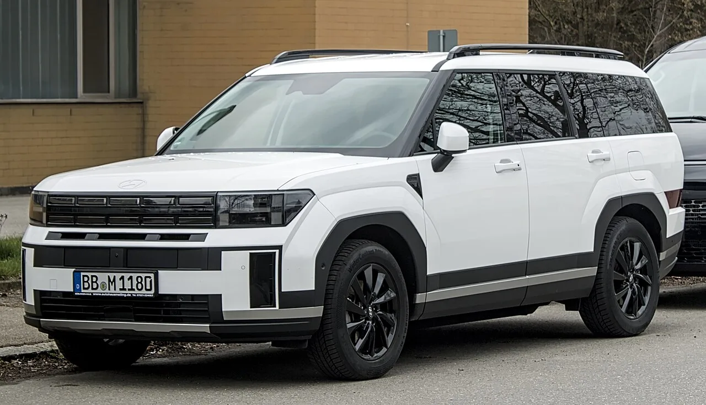

▲ 기아 레이 약 22만 대는 엔진제어장치 소프트웨어 설계 미흡으로 주행 중 시동이 꺼질 가능성이 확인돼 리콜 대상에 포함됐다 ⓒ Damian B Oh, Wikimedia Commons (CC BY-SA 4.0)
"몰고 다니던 차가 갑자기 도로 한복판에서 멈출 수도 있다"는 리콜은 흔치 않습니다. 그런데 지난 4월 22일 국토교통부가 발표한 리콜에는 이런 결함이 포함돼 있었습니다. 현대차·기아·KGM·한국토요타자동차가 제작·수입·판매한 17개 차종 53만 2,144대에서 제작 결함이 확인돼 자발적 시정조치(리콜)에 들어간다는 내용이었는데, 발표 이후 벌써 넉 달 가까이 지나면서 관심에서 멀어진 분위기입니다. 하지만 시정조치 개시일이 차종별로 4월 하순부터 6월 초까지 제각각이었던 데다, 안내문 발송이 늦어진 차종도 있어 아직 정비소를 찾지 않은 대상 차량이 적지 않을 것으로 보입니다.
1. 차종별 결함 내용 — 시동꺼짐부터 안전띠, 계기판, 뒷문까지

▲ 현대 싼타페 등 4개 차종 23만 9,683대는 1열 좌석 안전띠 고정장치 설계 미흡으로 충돌 시 승객 보호 기능이 떨어질 수 있어 리콜 대상에 포함됐다 ⓒ Alexander Migl, Wikimedia Commons (CC BY-SA 4.0)
이번 리콜에서 가장 위험도가 높다고 평가되는 것은 기아 레이입니다. 약 22만 대에서 엔진제어장치(ECU) 소프트웨어 설계가 미흡해 주행 중 갑자기 시동이 꺼질 가능성이 확인됐고, 4월 28일부터 소프트웨어 업데이트 방식의 시정조치가 시작됐습니다. 현대차는 싼타페와 싼타페 하이브리드, 아이오닉 6, 제네시스 G90 등 4개 차종 23만 9,683대가 대상으로, 1열 좌석 안전띠 고정장치(앵커) 설계가 미흡해 충돌 사고 시 승객을 정상적으로 보호하지 못할 가능성이 있습니다. 시정조치는 6월 4일부터 시작됐으며, 고정장치를 점검한 뒤 필요 시 보강 또는 무상 교체하는 방식입니다.
| 제조사 | 대상 차종 | 대수 | 결함 내용 |
|---|---|---|---|
| 현대차 | 싼타페 등 4개 차종 | 23만 9,683대 | 1열 좌석 안전띠 고정장치 설계 미흡 |
| 기아 | 레이 | 약 22만 대 | 엔진제어장치 소프트웨어 설계 미흡, 주행 중 시동꺼짐 |
| KGM | 토레스 등 6개 차종 | 5만 1,535대 | 메모리 과부하로 계기판 디스플레이 멈춤·꺼짐 |
| KGM | 토레스 EVX 등 2개 차종 | 1만 8,533대 | 후방 추돌 경고등 점멸 주기 부적합 |
| 한국토요타 | 프리우스 2WD·PHEV·AWD | 2,132대 | 뒷문 외부 핸들 회로 설계 미흡, 주행 중 뒷문 개방 위험 |
KGM(케이지모빌리티)은 토레스 등 6개 차종 5만 1,535대에서 메모리 과부하로 계기판 디스플레이가 멈추거나 꺼질 수 있는 결함이 확인돼 4월 20일부터 시정조치가 진행 중이며, 토레스 EVX 등 2개 차종 1만 8,533대는 후방 추돌 경고등이 정해진 주기대로 점멸하지 않는 결함이 별도로 확인됐습니다. 한국토요타자동차는 프리우스 2WD·PHEV·AWD 3개 차종 2,132대가 대상으로, 뒷문 외부 핸들 회로 설계가 미흡해 주행 중 뒷문이 열릴 위험이 있어 4월 23일부터 시정조치에 들어갔습니다.
2. 넉 달 지난 지금, 왜 다시 확인해야 할까
한국교통안전공단(TS)이 지난 3월 발표한 자료에 따르면, 국내 자동차 리콜 시정률은 2025년 기준 90.2%로 사상 처음 90%를 넘어섰습니다. 2020년 75.3%에서 매년 꾸준히 올라 2024년 87.1%를 거쳐 달성한 수치인데, 이는 리콜 시행일로부터 18개월 이내 실제 조치가 완료된 차량의 비율을 기준으로 합니다. 바꿔 말하면 리콜 발표 후 4~5개월 안팎인 지금 시점에서는 아직 정비소를 찾지 않은 차량의 비중이 이보다 훨씬 높을 가능성이 크다는 뜻입니다. 특히 현대 싼타페 등 안전띠 결함 차종은 시정조치가 6월 4일에야 시작됐고 안내문 발송도 6월부터였던 만큼, 우편물을 놓쳤거나 대수롭지 않게 넘긴 차주가 적지 않을 것으로 보입니다.
기아 레이처럼 주행 중 시동이 꺼지는 결함은 특히 고속도로나 야간 주행 중 발생하면 2차 사고로 이어질 위험이 큽니다. 소프트웨어 업데이트만으로 해결되는 만큼 정비소 방문 시간도 길지 않은데, 차주가 리콜 사실 자체를 모르고 지나가는 경우가 여전히 많습니다.